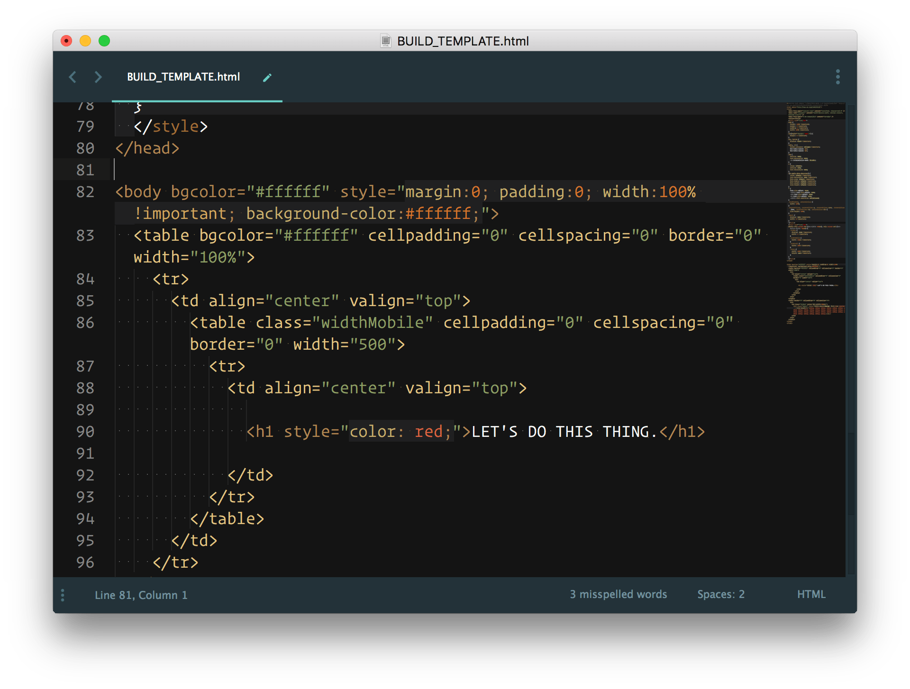

Back

Once the content is established, a webpage begins with basic HTML construction.
To view beyond the window of a website, simply right click and View Source.
How is your favorite sausage processed?